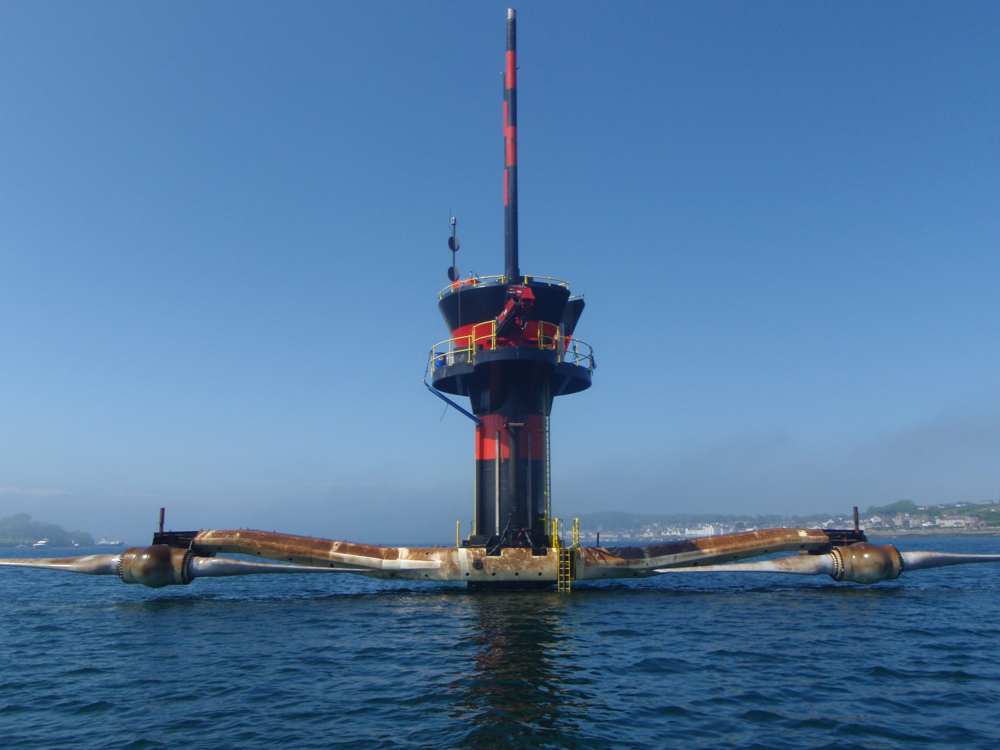

|  |
Tidal energy is a form of hydropower that converts energy obtained from tides into useful forms of power, such as electricity. Tides are created by the gravitational effect of the moon and the sun on the earth causing cyclical movement of the seas. One of the strengths of harnessing power from tidal ranges and tidal streams over other forms of renewable energy is that the process is entirely predictable.Tidal range technologies make use of the vertical difference in height between high tide and low tide. Projects take the form of tidal barrages or lagoons that use turbines in the barrier or lagoon to generate electricity as the tide floods into a reservoir. When the tide outside the barrier recedes the water retained can then be released through turbines, which generates electricity. |